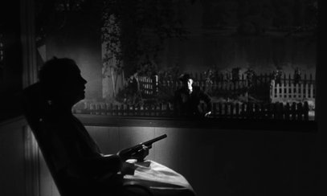

The Night of the Hunter, Still (Lillian Gish on the Porch, Robert Mitchum in the Yard)
Charles Laughton · 1955 · Film, black and white (frame)
In copyright. Look and learn: shown for study, not for download.
It was the only feature Charles Laughton directed. Shooting took 36 days, from 15 August to 7 October 1954, entirely on Hollywood sound stages because there was no budget for Appalachian locations. The cinematographer Stanley Cortez visited Laughton at home to explain lenses and camera heights. Elsa Lanchester, Laughton's wife and his first choice for Rachel Cooper, turned the part down and suggested the silent film star Lillian Gish. The film was a box-office failure on release.